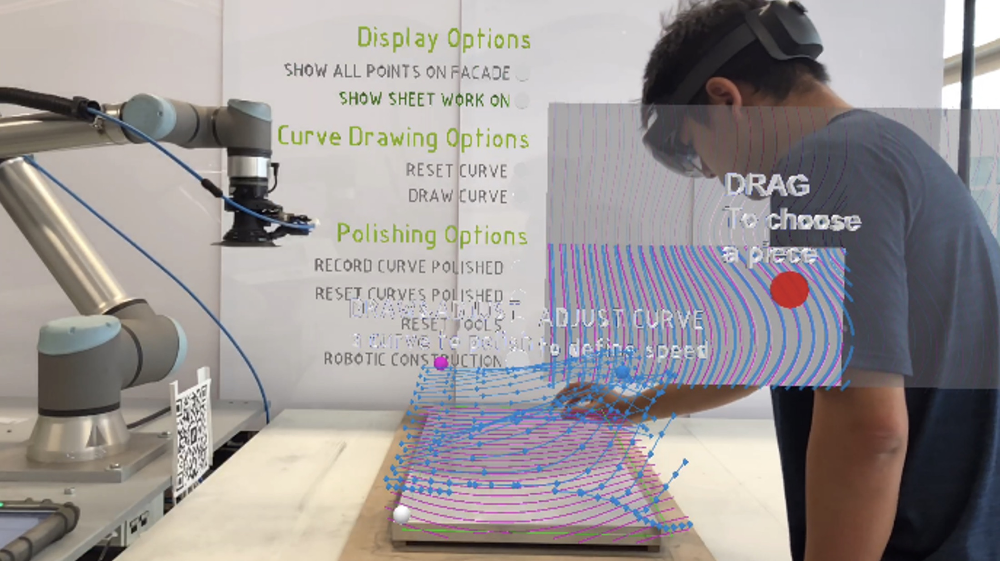
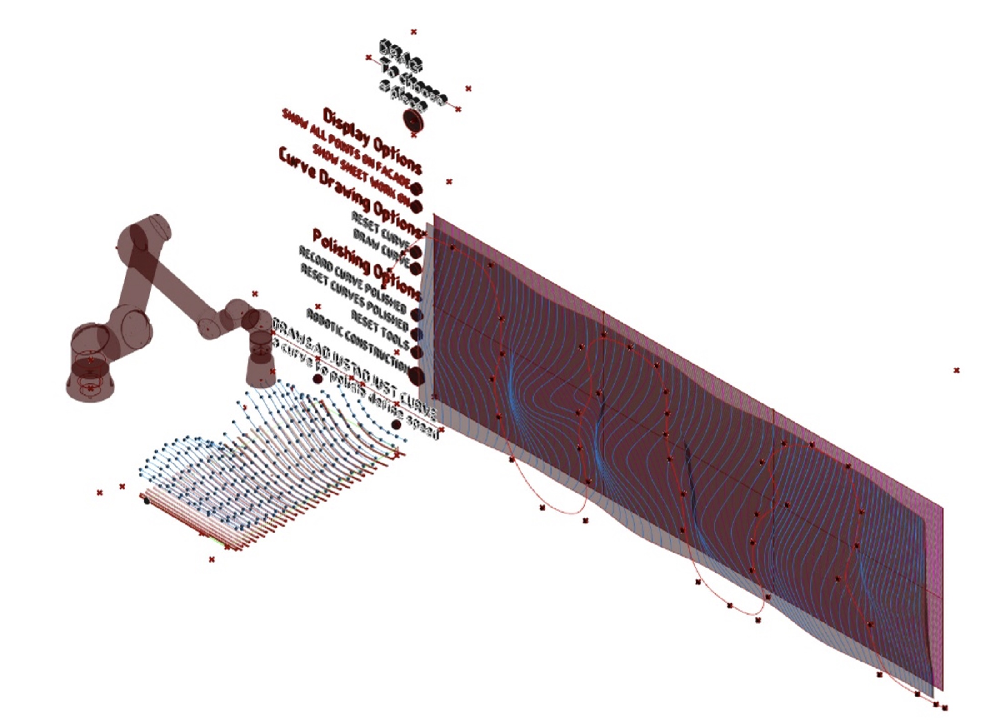
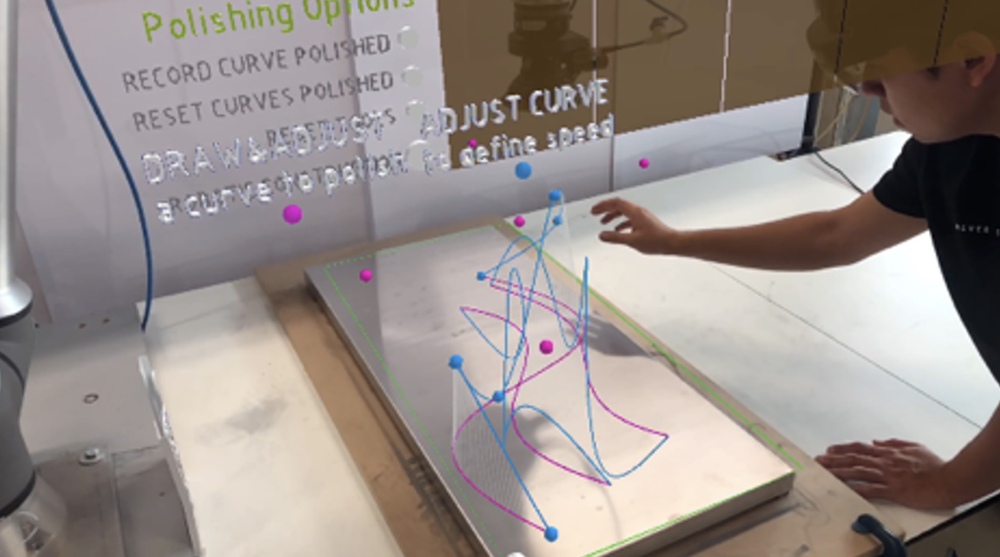
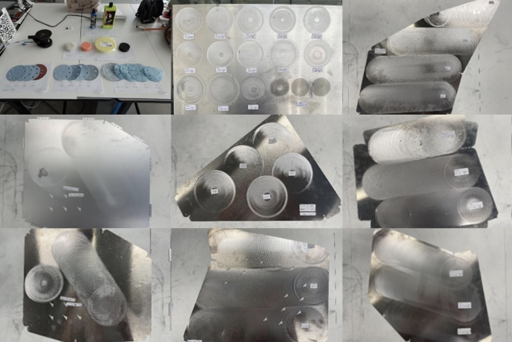
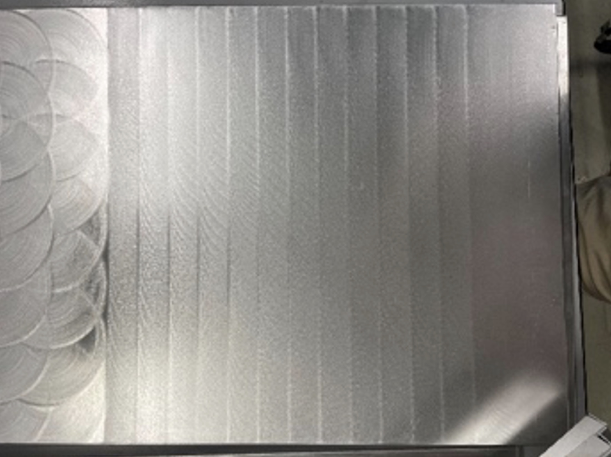
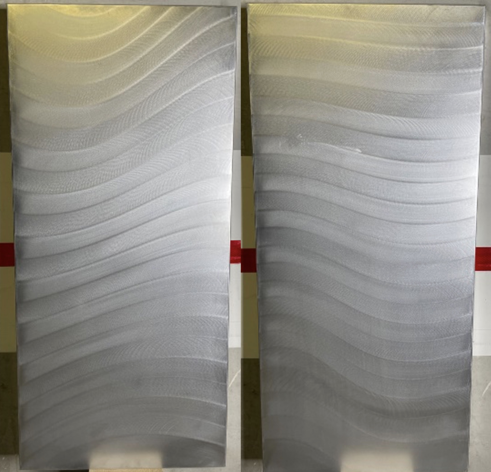

Robotic fabrication · Milan · 2023
Interactive
Robotic Grinding
Bringing human spatial judgment into robotic surface fabrication.

Designing the process while making.
This project investigates how people can remain actively involved in robotic grinding. A gesture-based augmented-reality interface makes fabrication variables spatially legible, allowing users to edit geometry and influence the robot's grinding path, speed, and force.
The workflow connects design decisions, robot control, and material feedback in one continuous process. It was tested through a full-scale demonstrator assembled from architectural metal sheets.
- Period
- 2023–2024
- Location
- Milan, Italy
Video
From spatial input to material effect.
Spatial input controls fabrication variables, the robot executes the grinding path, and the resulting surface provides immediate visual feedback. The sequence connects interaction design with a measurable material outcome.




